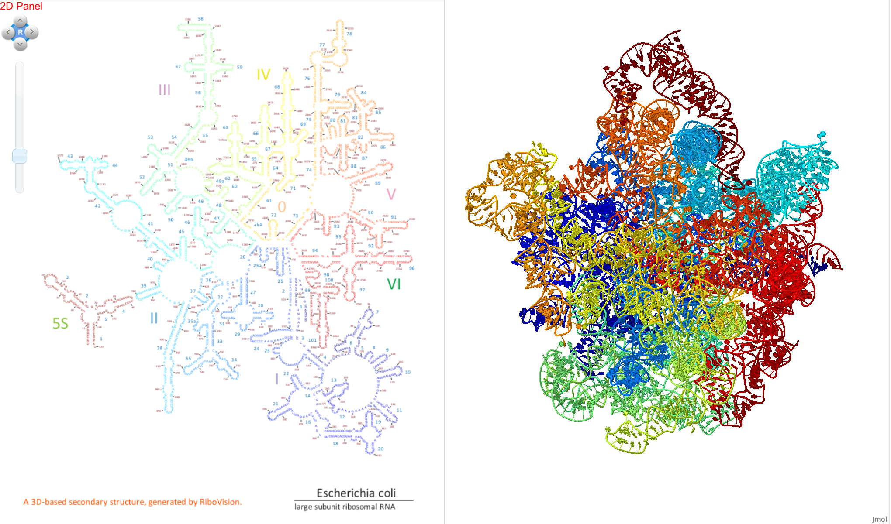
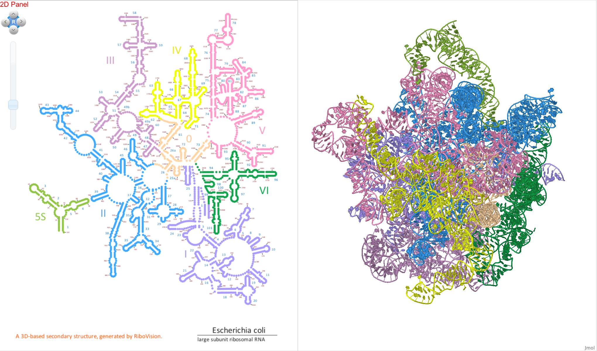
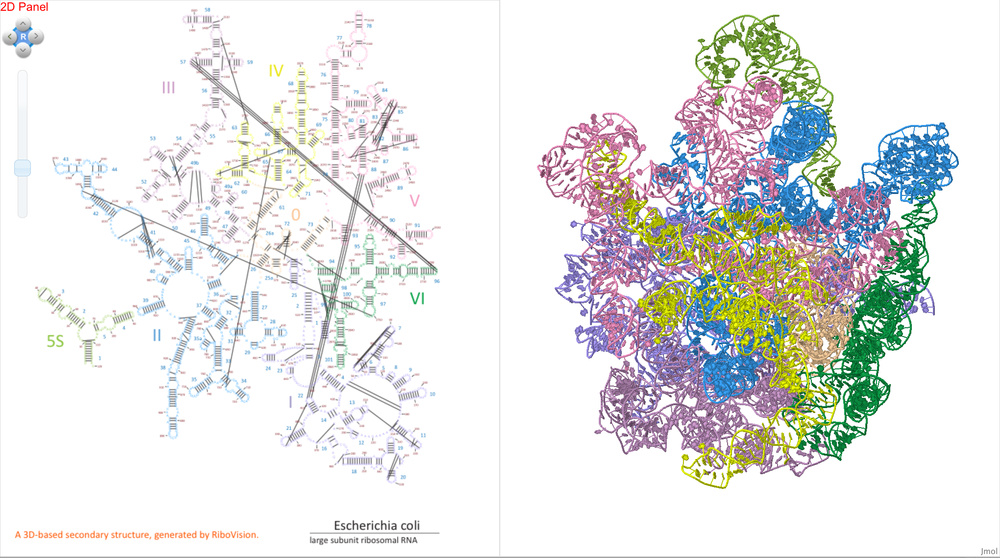

We use the “Rainbow” data set as an example in this tutorial. We drag “Rainbow” to the Letters layer, coloring the nucleotide letters in the secondary structure from blue (at the 5’ end) to red (at the 3’ end) of the RNA.
We also drag the data set “Domains” to the Circles layer to place filled circles on each nucleotide, color-coding the RNA by secondary structure domain.
We can also graph “Inter-Nucleotide Contacts” in the 2D panel, which are shown as lines between nucleotides that are close together in 3D space according to various criteria. We will demonstrate this feature by selecting “Base Pair interactions” from the “Interaction Type” menu. Some interaction types can be further characterized into subtypes, so we clear out the “Interaction Sub-Type” menu, and choose, for example, “cis Watson Crick” base pairs, abbreviated as “cWW, cWw, and cwW”. You will see that lines appear between some nucleotides. Each line connects two nucleotides forming a Watson Crick base pair. Note that the “Inter-Nucleotide Contacts” data are independent and cannot be dragged to the “Circles” or “Letters” layers.
